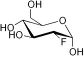

What is Nuclear Medicine?
Nuclear medicine is a subdivision of medical imaging where the patient is injected with a radioactive material that highlights or treats a disease or deformity. The radioactive material is usually referred to as a radiotracer or radiopharmaceutical. There are three ways that the radiotracer can be sent to its destination and these include injection, ingestion of a pill, or inhalation of a gas depending on where the radiotracer is needed. Once inside the body this chemical accumulates at its intended target and gives off pairs of gamma rays. Two or three different devices then detect these gamma rays. These include a gamma camera, a Positron Emission Tomography scanner, and/or probe. In terms of diagnosing ailments, it can be useful in determining kidney function, heart blood flow and function, respiratory function, gallbladder inflammation, density and structure of bones, presence and location of cancerous tissue, location of an infection, measure thyroid function, abnormalities in the brain, and localization of lymph nodes before surgery. The second function of nuclear medicine is as a therapeutic treatment for hyperthyroidism, transport of antibodies for certain forms lymphoma, blood disorders, and tumors that have metastasized to the bones.

How Does the PET Scan Work?
PET scanning is a branch of nuclear medicine that uses radiotracers that emit positrons in the form of decay. A positron is a particle that has an opposite charge to an electron. These positrons encounter electrons and the two collide, emitting a pair of gamma photons. These photons travel in every direction together, which creates the 3-D architecture of the organ being observed. The tube that the patient is laying in is lined with a material called a scintillator. This material absorbs the pairs of gamma photons and converts the energy to longer wavelength fluorescence that is easier to detect and record. There are several radionuclides used for PET scans and they include carbon-11, nitrogen-13, oxygen-15, and fluorine-18. These radionuclides are typically bound to compound that is normally used by the body like glucose or a glucose analogue, water, ammonia, or to molecules that bind to receptors that are drug targets. Once the radiotracer is taken into the body there is a waiting period so that the chemical can be concentrated at the target.

A PET Scan of the Brain
The most common radiotracer used for neurology is FDG. FDG stands for fluorodeoxyglucose. It is one of the glucose analogues that can be absorbed by live tissue.

Once absorbed by a cell, the FDG cannot be phosphorylated and undergo glycolysis, so this delay gives the FDG time to release the positrons needed to find its location. This can show doctors where there is good and not so good uptake of glucose a.k.a. live/normal functioning tissue. One application is locating a focal point of seizures. At the focal point there is a significant decrease of oxygen metabolism. One of the uses of FDG is at the forefront of Alzheimer’s disease diagnoses. In a brain that is riddled with Alzheimer’s like pathologies there will be a significant decrease in both glucose and oxygen metabolism together. A third application of using the PET scan for neuroimaging is to obtain an image of receptor pools in the brain. The radiotracer that is injected is a ligand for a certain neuroreceptor, so that it binds with the specified receptor in the brain. Certain neurological diseases can be characterized by increased or decreased receptor pools, which can be visualized with a PET-scan.

References
Image Sources
{kind=link}
{kind=link}
{kind=link}
- Alzheimer's 1 2
- Antibiotics
- Antifouling Paint
- Arthritis
- Ayurvedic Medicine
- Breast Feeding
- Cancer Therapy
- Cattle Feed
- Cerebral Ischemia
- Chelation Therapy
- Chernobyl
- Chicken Feed
- Chocolate
- Cigarettes
- Coal 1 2
- Copper Mining
- Cremation
- Diabetes
- Electronic Waste
- Hat Making
- Hard Metal Disease
- Hybrid Cars
- Imaging 1 2 3 4
- Industrial Pollution
- Jewelry Allergy
- Lead Poisoning
- Lewisite
- Magnetic Particles
- Makeup
- Mountain Top Removal
- MRI Imaging
- Neurotoxicity
- Nuclear Power
- Nuclear Weapons
- Ouch Ouch Disease
- Peripheral Neuropathy
- PET Imaging
- Photodynamic Therapy
- Phytoremediation
- Pregnancy
- Radioactivity 1 2
- Seafood
- Sunscreens
- Tattoos
- Vaccines
- Wound Healing